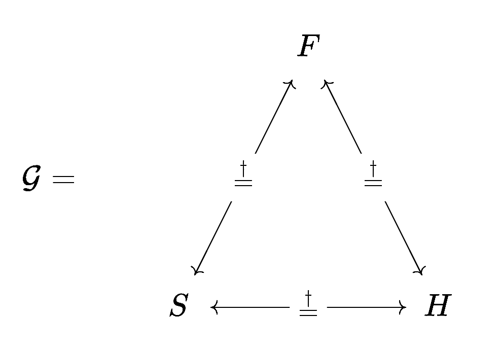

The God Groupoid
Table of Contents
1. Introduction
This is my attempt to formulate the Catholic theology of the Trinity in mathematical language. If you find any errors in the math or the theology, please email me at mailto:mail@tobilehman.com, I care deeply about getting this right. To my mathematician's eyes, the Catechism of the Catholic Church (CCC) has parts that remind me of a mathematical text. The axiomatic truths asserted early on, the precise and consistent use of language, the fidelity to reason. I don't know if the entire Catechism could be written to look like a math text, or if it even should, but I think the doctrine of trinity can. This is my best attempt to do so. God bless.
For background on category theory or Catholic theology, see my sources section.
2. Definitions
\[\begin{align}\mathcal{G} &= \text{God} \\ F &= \text{The Father}\\ S &= \text{The Son} \\ H &= \text{The Holy Spirit} \\ (X \stackrel{\dagger}{=} Y) &= (X \text{ is consubstantial with } Y) \end{align}\]
2.1. The category \(\mathcal{G}\)
We will represent the triune God \(\mathcal{G}\) as a category where the set of objects is:
\[\text{ob}(\mathcal{G}) = \{F,S,H\}\]

And all the sets of morphisms are isomorphisms, they are the \(\stackrel{\dagger}{=}\) relation, which is read "is consubstantial with".
\[\text{Hom}(F,S) = \{ \stackrel{\dagger}{=}_{FS} : F \to S \} \] \[\text{Hom}(S,H) = \{ \stackrel{\dagger}{=}_{SH} : S \to H \} \] \[\text{Hom}(H,F) = \{ \stackrel{\dagger}{=}_{HF} : H \to F \} \] \[\text{Hom}(S,F) = \{ \stackrel{\dagger}{=}_{SF} : S \to F \} \] \[\text{Hom}(F,H) = \{ \stackrel{\dagger}{=}_{FH} : F \to H \} \] \[\text{Hom}(H,S) = \{ \stackrel{\dagger}{=}_{HS} : H \to S \} \]
2.2. Interpreting "God is the Father"
Bill Clinton once reminded us that it depends on what your definition of "is" is. We have formalized the sentences like "The Father is consubstantial with the Son", but then defined God as the category that contains the Father, Son and Holy Spirit. What does it mean to say that "God is the Father" (In our notation: \(\mathcal{G}\) "is" \(F\))?
2.2.1. The \(\text{Is}\) Functors
We interpret the sentence "God is the Father" using the \(\text{Is}_F : \mathcal{G} \to \mathcal{G}\downarrow F\) Functor.
\(\mathcal{G}\downarrow F\) is the slice category construction, which makes a category out of an object that isomorphic to \(\mathbb{1}\).
- Functors
Given a category \(\mathcal{C}\) and a category \(\mathcal{D}\), a functor is a mapping from the objects of \(\mathcal{C}\) to the objects of \(\mathcal{D}\), such that morphism composition is preserved. So if \(f : A \to B\) is a morphism in \(\mathcal{C}\), then \(F(f) : F(A) \to F(B)\) is a morphism in \(\mathcal{D}\).
- Slice Category
Given a category \(\mathcal{C}\) and an object \(c \in \text{ob}(\mathcal{C})\), the slice category \(\mathcal{C}\downarrow c\) is a category where:
- Objects are morphisms \(f : x \to c\) in \(\mathcal{C}\)
- Morphisms from \(f : x \to c\) to \(g : y \to c\) are morphisms \(h : x \to y\) in \(\mathcal{C}\) such that \(g \circ h = f\)
2.3. Lemma 1.1: \(\mathcal{G}\) is a groupoid
A groupoid is a category in which every morphism is an isomorphism. That's another way of saying every morphism has an inverse.
2.3.1. Proof:
If you look at the hom-sets above, you will see that for every \(\text{Hom}(X,Y)\) there's a \(\text{Hom}(Y,X)\). Without loss of generality, consider \(\text{Hom}(F,S)\), which asserts that "The Father is consubstantial with The Son".
3. Axioms
- There is one God (CCC:200)
- There are three Divine Persons, The Father, The Son and The Holy Spirit. All are fully God. (CCC:253).
- The Father is consubstantial with The Son, who is consubstantial with the Holy Spirit. (CCC:689) \[F \stackrel{\dagger}{=} S \stackrel{\dagger}{=} H\]
- All things come from The Father (CCC:258) \[\forall x : \text{from}_F(x)\]
- All things are through The Son (CCC:258) \[\forall x : \text{through}_S(x)\]
- All things are in The Holy Spirit (CCC:258) \[\forall x : \text{in}_H(x)\]
4. The Most Holy Trinity
God is the Father, the Son, and the Holy Spirit. The use of the word "is" doesn't follow the same transitive rules as \(=\) in mathematics. There's another branch of math that deals with this, category theory. Category theory goes beyond the idea of "strict equality" and focuses on relationships and mappings between objects. This distinction will be useful in trying to understand the Trinity.
Let \(G = \text{God}\), \(F = \text{The Father}\), \(S = \text{The Son}\) and \(H = \text{The Holy Spirit}\).
If "is" was the normal \(=\) sign, then we could prove something false. h